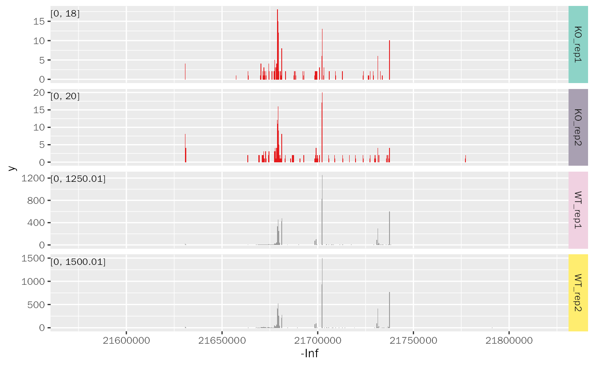

geom_coverage.RdLayer for Coverage Plot.
geom_coverage( data, mapping = NULL, color = NULL, rect.color = NA, facet.key = "Type", facet.order = NULL, facet.color = NULL, group.key = "Group", range.size = 3, range.position = c("in", "out"), mark.region = NULL, mark.color = "grey", mark.alpha = 0.5, show.mark.label = TRUE, mark.label.size = 4 )
| data | Track prepared by |
|---|---|
| mapping | Set of aesthetic mappings created by |
| color | Track color. Default: NULL (select automatically). |
| rect.color | The color of every bin. Default: NA. |
| facet.key | Sample type key to create coverage plot. Default: Type. |
| facet.order | The order of coverage plot. Default: NULL. |
| facet.color | The color of sample text. Default: NULL (select automatically). |
| group.key | Group of samples. Default: NULL. |
| range.size | The label size of range text, used when |
| range.position | The position of y axis range, chosen from in (move y axis in the plot) and out (normal y axis). Default: in. |
| mark.region | Mark region on the plot. Default: NULL. |
| mark.color | The color of marked region. Default: "grey". |
| mark.alpha | The alpha of marked region. Default: 0.5. |
| show.mark.label | Logical value, whether to show mark label (use label column in |
| mark.label.size | The label size of mark label. Default: 4. |
Layers of ggplot2.
library(ggcoverage) library(utils) library(ggplot2) meta.file <- system.file("extdata", "RNA-seq", "meta_info.csv", package = "ggcoverage") sample.meta <- utils::read.csv(meta.file) # track folder track.folder <- system.file("extdata", "RNA-seq", package = "ggcoverage") # load bigwig file track.df <- LoadTrackFile( track.folder = track.folder, format = "bw", meta.info = sample.meta ) ggplot() + geom_coverage(data = track.df, color = "auto", mark.region = NULL)#> Warning: The color you provided is not as long as Type column in data, select automatically!